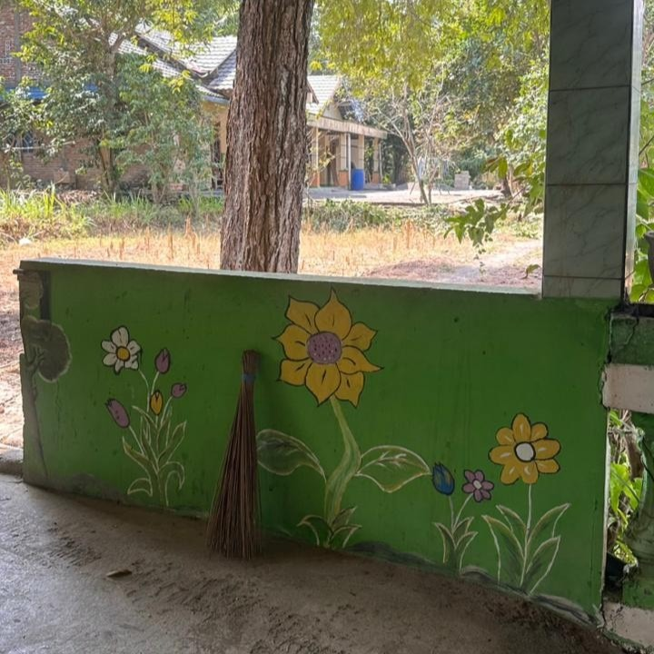
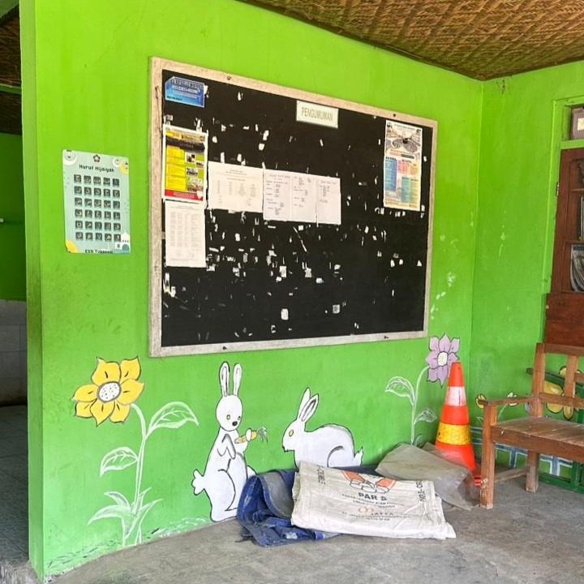
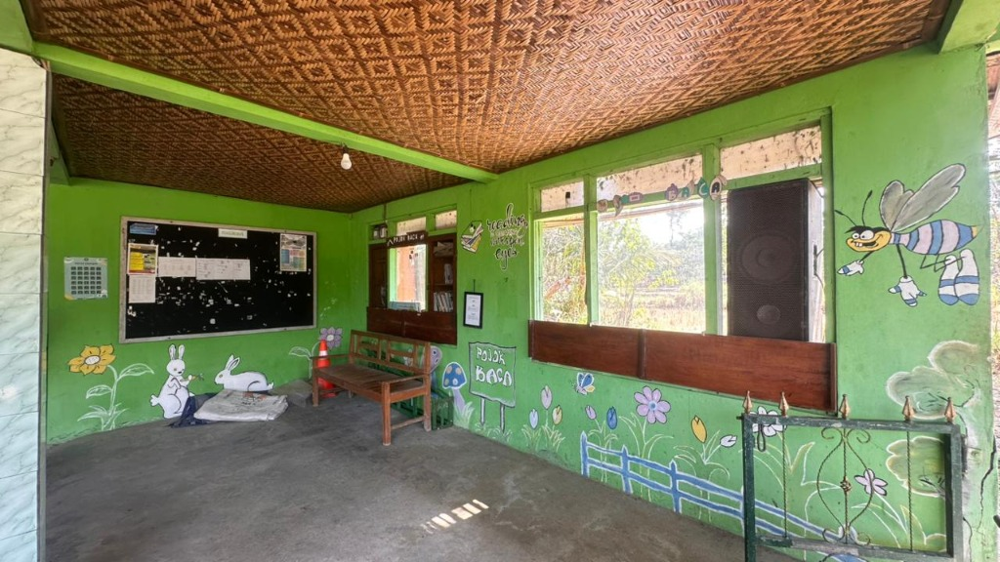
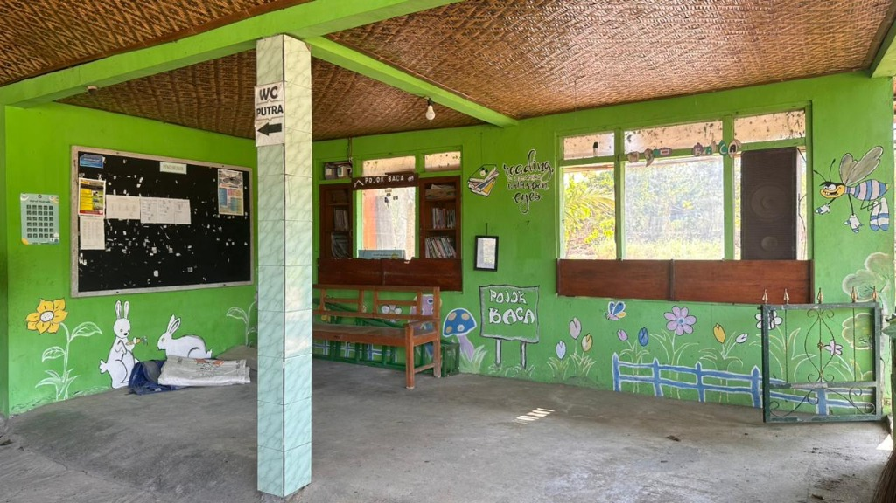

Perkenalan KKN & Padukuhan Bulak
Kami adalah kelompok KKN dari Universitas Pembangunan Nasional Veteran Yogyakarta yang bertugas di Padukuhan Bulak, Tuksono, Sentolo, Kabupaten Kulonprogo.
Padukuhan Bulak adalah sebuah dusun yang berada di Kabupaten Kulonprogo dengan luas kurang lebih 50 hektar, didominasi lahan pemukiman dan pertanian, dengan jumlah penduduk sekitar 600–700 jiwa.
Mengapa Kegiatan Ini Penting
Budaya membaca merupakan bekal penting bagi tumbuh kembang anak. Namun, minat baca yang semakin menurun serta terbatasnya akses terhadap buku bacaan yang menarik menjadi tantangan dalam menumbuhkan budaya literasi di lingkungan keluarga dan masyarakat.
Melalui kegiatan Open Donasi Buku, kami mengajak seluruh masyarakat untuk berpartisipasi mendukung revitalisasi pojok baca di Masjid Al-Abiddin Padukuhan Bulak, agar menjadi ruang belajar yang lebih nyaman, menarik, dan mampu menumbuhkan semangat membaca bagi anak-anak.
Tujuan & Manfaat
Kegiatan ini bertujuan menghimpun donasi buku layak baca untuk memperkaya koleksi pojok baca sekaligus meningkatkan minat baca anak-anak di Padukuhan Bulak. Dengan dukungan dari para donatur, diharapkan tercipta ruang literasi yang lebih hidup, mendorong kebiasaan membaca sejak dini, memperkuat peran keluarga dalam membangun budaya literasi, serta memberikan manfaat jangka panjang bagi perkembangan pengetahuan dan kreativitas anak.
Apa yang Kami Lakukan
Revitalisasi pojok baca di Masjid Al-Abiddin, Padukuhan Bulak.
Sasaran Kegiatan
Tempat & Waktu Pelaksanaan
Tahapan Kegiatan
Galeri Pojok Baca



